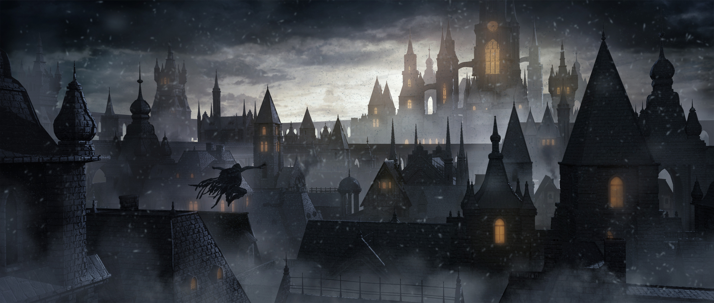
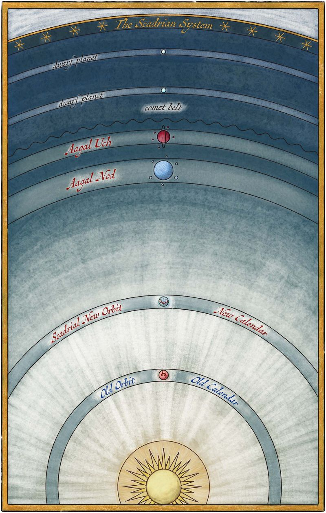
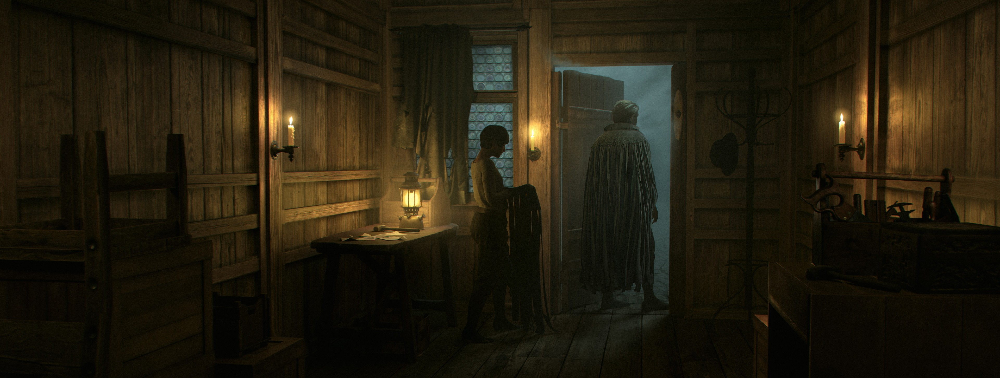
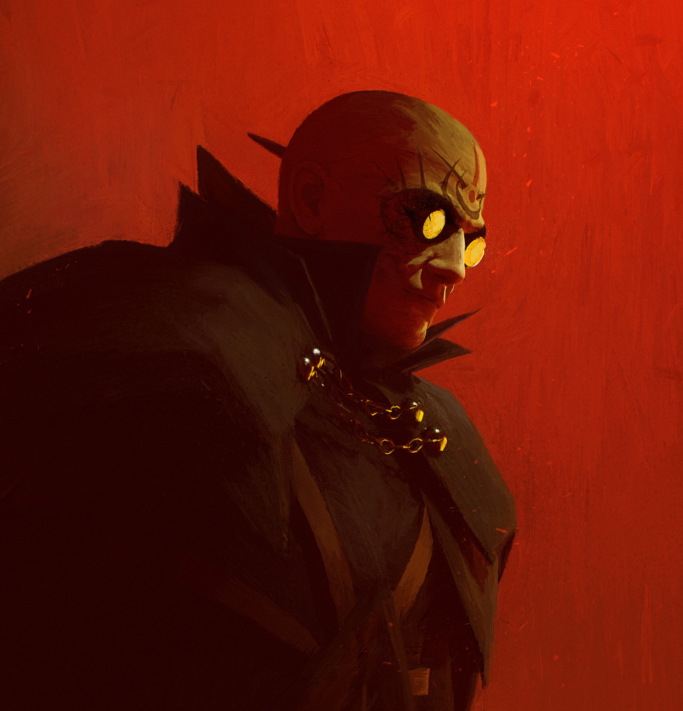

SCADRIAL
A planet of ash and Ruin. The sky rains down ash, and the nights are dominated by the mist. Despite the harsh conditions of the planet, life persevered. During the Classic Era of the planet, many different civilizations developed with a large variety of different cultures and religions.
Now, a thousand years have passed under the oppressive rule of the Lord Ruler. Ash blankets the world, plants strain to grow, and the skaa live in fear. The Final Empire controls all — but whispers of rebellion begin to stir in the mist.

SCADRIAN SYSTEM
The Scadrian system is the name given to the planetary system containing the planet of Scadrial. In addition to Scadrial, the system includes two gas giants, two dwarf planets, and a comet belt.
The system hosts five different planets: Scadrial, Aagal Nod, Aagal Uch, and two unnamed dwarf planets which lay outside of the system's comet belt.


INHABITANTS
Scadrial is home to a diverse range of peoples and cultures, shaped by the planet’s harsh environment and deep-rooted traditions. During the Final Empire's reign, society was rigidly divided between two primary classes: the nobility, descendants of those who supported the Lord Ruler, and the skaa, a vast, oppressed underclass forced into labor and poverty.
Later periods of Scadrial’s history see an even greater diversification of its inhabitants, with technological progress reshaping both cities and social roles. New classes emerged, such as urban workers, industrial magnates, and lawkeepers, blending old bloodlines and new ambitions. Though the scars of imperial rule linger, Scadrial’s people continue to evolve—resilient, inventive, and always driven by the stubborn will to survive.
METAL ARTS
Scadrial is uniquely defined by its mystical connection to metal, expressed through three interconnected systems of magic known as the Metal Arts: Allomancy, Feruchemy, and Hemalurgy. Each of these systems relies on different methods of using metals to access magical effects.
Allomancy is the most well-known and widely practiced Metal Art. It involves ingesting and “burning” specific metals to produce supernatural effects. Feruchemy, practiced almost exclusively by the Terris people, involves storing physical or mental attributes like strength, health, or memories in metal objects called metalminds. Hemalurgy is a darker art, allowing power to be stolen from one person and given to another by spiking a person with metal. While dangerous and ethically fraught, Hemalurgy can transfer abilities across people or even across the other Metal Arts.
